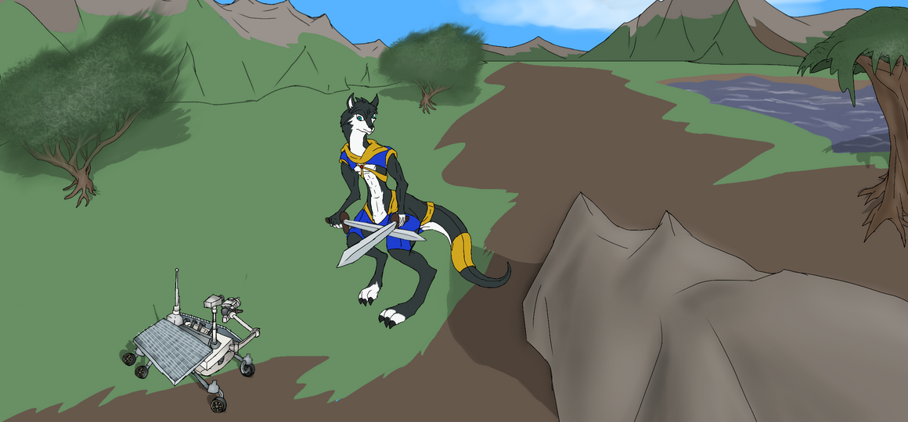

ToL
Main Questline: Main Questline: On another world a planet Manareth a world with anthropomorphic animals
and nonanthropomorphic animals, there are three fractions, one called Monarchic Council who seeks to
takeover Veariaum (Vear-e-a-um) and every providence around it through deceit, manipulation, beguiling
specious and pinning species against each other or force if they cannot lie to grab power. Free Order
sets to defend the providences from the conquest of the Monarchic Council and stop their deceptions
having hold over them and confront the overarching entity as well as confront the Wildbringers.
Wildbringers, an anti civilization organization who seeks bring down and collapse all the other
fractions and civilization on Manareth into nonexistence and return all into ways of the wild,
eliminating all concepts of civilization at all and force everyone into living as nonanthropomorphic
animals, sending all into a world of survival of the fittest exactly as such in the wilds.
The Wildbringers views are that cause of the hardships, conflicts and suffrage are cause by people
living the wilds for civilization and seeks to bring it down and sends everything into the Ways of the
Wilds and natural selections. So, that anthropomorphic animals would become just as the same
nonanthropomorphic animals and their ultimate goal that over generations of forbidding civilization
that the line between the animals would become nonextant. And they plan that this would integrate
vicious repulsion against any glimpse against anything that would lead to return any form of
civilization whatsoever, the Wildbringers are even against hut dwellings.

Veariaum Capital
Veariaum capital city has establish a free govenment where judges and cheif judge are elected as
leaders of the land half a century ago and is intended to establish a system where no one species
would be above another. For the first twenty five years there were peace, even though Monarchic
Council attempts to usurp power from the curtain citizens with a hierarchy of species, but always
been thwarted by the Free Order maintain the citizens' power. Monarchic Council will attempt to
establish a monarchy instead of a free govenment.
Monarchic Council seeks to takeover Veariaum and every providence around it through deceit,
manipulation, beguiling specious and pinning species against each other or force if they cannot
lie to grab power. Free Order sets to defend the providences from the conquest of the Monarchic
Council and stop their deceptions having hold over them.

Vinious Swamp
Vinious Swamp located in the southen parts the wilderness in the providence of Veariaum
is filled with carnivorous plants and predator that thrives on any prey that wonders
through these grounds, the swamp is a dangoerous area because of these plants. These
plants are large enough to capture and devour prey up to 7ft tall. Many adventurers
and travelers who had to attempt to cross the swamp for a quest, but couldn not reach
the other side. There are places and providences that would be reach crossing through
the swamp and some others located within that are safe locations within.
There residents who adapts and lives within Vinious Swamp in some hamlets and settlements
scattered in some areas of the swamp. There are also towns boardering the swamp, some of
those residents are not as adapt to lifestyle with Vinious Swamp. There are times where
one must traverse through these swamp lands to these areas for important dealings and
missions between these areas.

Veariaum Map
The map of providence of Veariaum showing the outskits of the main capital, the rivers, the
valleys, grasslands and the mountains.

Scavager's Dungeon
In a neighboring providence Koaulti south of Veariaum there is a terrible dungeon where prisoners
with has no source of food, except for the deceased. When prisoners are sent into this cavern, they
are thrown into the river in a gorge that leads to a underground waterfall into tunderwater stream
that with the dungeon called Scavager Cavern for mentioned reasons. The only way to escape the dungeon
is a underwater labyrinth, if any prisoner escapes without drowning would be allow to go free.

Outworlders
Outworlders Questline: While on a journey traveling through the wilderness in the providence of
Veariaum (Vear-e-a-um) one of the adventures, that was quest mentioned previously, had a random
encounter with a bizarre automaton that does not look like any design of any civilization or nation
this adventurer has ever seen. This is very curious to the adventure, so they escort or took it to
an automaton expert, a raven named Huginn, who researches and design automatons to figure out this
origins of machine and who designed it. This was a second time an automaton of unknown origin such
as this one that was brought to him. Unbeknownst to the adventure that the automaton has a purpose
to observe this land, their world, their planet, Manareth from another as anything its sees would
be seen by those sent it, who are surprised that this planet is inhabited, by as one of their
members referred to them, “medieval, middle age era furries” no less. The Outworlders, as the
Manarethlings would soon referred to them, later would send colony and settlers to Manareth. The
outcome of the inhabitants and Outworlds would vary based on choices of the adventurers, ranging
from forming a treaty after battles or preventive, allowing them to have settlers and lands like
the others around them, the Outworlders being subjects to one of the providence, Outworlders being
completely friendly through negotiation or hostile, requiring strategy to defeat them.
Outworlder Colony
Creatures known as humans, or Outworlders as referred to by the inhabitants of Manareth, has
settlements as allowed by the Cheif Judge of Veariaum. The fact that the language is somewhat
simailar are a astronmical odds, that they can have a very decent ease of communicating. The
Outworlder settlement has highly advance machines far beyond those of the planet's natives,
these tech, agriculture, aquaculture which allows them to acclimatize to the waters of Manareth,
and the giant dish allows the settlers to communicate with the world they were from.